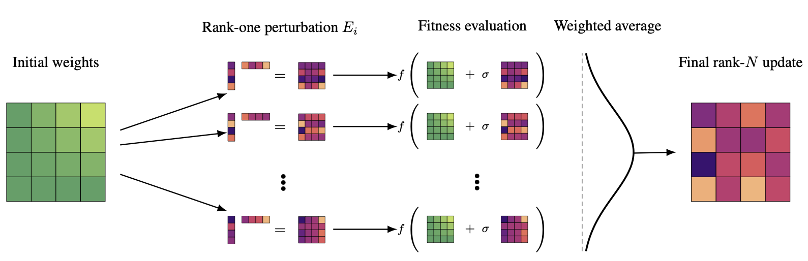

Evolution Strategies at the Hyperscale
General ML Training Made as Fast and Easy as Inference
Written by: Bidipta Sarkar
We are excited to introduce EGGROLL, a general-purpose algorithm for training ML systems (including LLMs) that nearly matches the speed and resource requirements of batched inference, giving a hundredfold increase in training throughput over standard ES for billion-parameter models at large population sizes. EGGROLL is a variant of Evolution Strategies (ES) that uses low-rank perturbations of the model parameters to generate full-rank parameter updates.1
As an ES variant, EGGROLL is general enough to optimize the model parameters within any inference system. Thanks to its increased efficiency, EGGROLL effectively eliminates the barrier between inference and training. Specifically, if you can perform batched LoRA inference on a system and define a fitness function, which specifies the relative performance of a neural network system on a task, EGGROLL can optimize all the parameters of that system to maximize the fitness function.
In the rest of this blog post, we describe the EGGROLL algorithm and highlight experimental results on high-throughput pretraining of a pure integer nonlinear RNN language model that uses no activation functions, a task that is only made feasible by EGGROLL. We also demonstrate its potential as an RL alternative by training RWKV7 models on the countdown and gsm8k reasoning tasks.
To accompany this blog post, we also release:
- A full paper detailing our theory and experimental results.
- A jax-based experimental neural network library to use EGGROLL on custom settings, along with starter code for training the RWKV language model.
- A single-file implementation of pure int8 language model training. We highly encourage community contributions, similar to the nanogpt speedrun, to see how efficient we can make pure evolution pretraining in integer formats!
This is an early research checkpoint of our work. We will continue iterating on our methods and results, but we wanted to share these results early with the community to get feedback and more thoughts. We will be actively monitoring our alphaxiv discussion page, so please add comments and questions there.
What is EGGROLL
EGGROLL stands for Evolution Guided General Optimization via Low-rank Learning. The method is illustrated in the figure below

To explain each part of the acronym, we will first give a brief overview on how Evolution Strategies works; for a more complete description of the history and variants, we highly recommend Lilian Weng's blog post on ES.
Evolution Strategies work by directly optimizing the parameters of a neural network by sampling random perturbations and shifting the parameters towards the perturbations that give the best fitness. Mathematically, OpenAI's ES formulation is represented as:
\[\nabla_{\theta}\mathbb{E}_{\epsilon\sim N(0,I)} F(\theta+\sigma\epsilon) = \frac{1}{\sigma}\mathbb{E}_{\epsilon\sim N(0,I)}\{F(\theta+\sigma\epsilon)\epsilon\}\]
where \(F\) is the fitness function, which measures how good a specific set of parameters are at the task at hand similar to the reward function in RL, \(\theta\) are the parameters you are optimizing, and \(\sigma\) is the standard deviation of the noise to add to the parameters.
In OpenAI's Evolution Strategies, we sample from a normal distribution independently for each parameter. In jax, this can be represented as follows for a standard matrix multiplication, where thread_id is the index of the population member you are evaluating:
1: def forward(base_perturbation_key, sigma, parameter, x, thread_id): 2: key = jax.random.fold_in(base_perturbation_key, thread_id) 3: perturbation = jax.random.normal(key, parameter.shape) * sigma 4: return x @ (parameter + perturbation).T 5: 6: batch_forward = jax.vmap(forward, in_axes=(None, None, None, 0, 0))
Note that standard matrix multiplication has now turned into a batched matrix multiplication, which is extremely inefficient on GPUs for large matrices and large populations.2
Our approach is instead to structure our perturbations to explicitly be low-rank. This enables us to do a large standard matrix multiplication, alongside a batched vector-vector multiplication and batched scalar-vector multipliation at rank 1. This is extremely fast and scalable, giving us the throughput curves in the headline image (less than 10% slower than pure non-lora inference). In jax, this is represented as:
1: def forward(base_perturbation_key, sigma, parameter, x, thread_id, rank=1): 2: key = jax.random.fold_in(base_perturbation_key, thread_id) 3: a, b = parameter.shape 4: perturbation = jax.random.normal(key, (a+b, rank)) 5: B = lora_params[:b] # b x r 6: A = lora_params[b:] # a x r 7: return x @ parameter.T + x @ B @ A.T * sigma 8: 9: batch_forward = jax.vmap(forward, in_axes=(None, None, None, 0, 0))
In the limit as rank increases3, the "gradient" estimate just standard ES with the structured matrix:
\[ \nabla_{\theta}\mathbb{E}_{\epsilon_1, \epsilon_2 \sim N(0,I_{d})} F(\theta+\sigma\epsilon_2 \epsilon_1^T) = \frac{1}{\sigma}\mathbb{E}_{\epsilon_1,\epsilon_2\sim N(0,I_{d})}\{F(\theta+\sigma\epsilon_2 \epsilon_1^T)\epsilon_2 \epsilon_1^T\} \]
Note that although individual perturbations are low-rank, the expression on the right side is actually high-rank, due to the properties of sums of low-rank matrices. We directly fuse this high rank update into the parameters at each update step, which is why we refer to this as Online Low-rank Learning. In comparison, using ES to directly optimize LoRA matrices will still be restricted to a low-rank perturbation, which may be enough for LLM reasoning but not sufficient for pretraining or supervised fine-tuning.
Training an EGG: Pure Integer Pretraining of a Nonlinear RNN with No Activation Functions
To highlight the strength and flexibility of EGGROLL, we wanted to demonstrate that it can be used for training architectures that would previously be impractical or extremely difficult with typical backprop. We therefore work under the following constraints:
Pure Integer Training. Although prior work, like BitNet, does quantization-aware training, we propose end-to-end training with pure integer datatypes. This means storing all weights in int8, as this is the fastest supported datatype on H100s, and only using integer operations and lookup tables, including layernorms and the softmax operation for the loss calculation.
Nonlinear RNN. Modern language models require sequence-parallel architectures, like Transformers or state-space models, in order to avoid expensive backpropagation through time. However, these sequence-parallel architectures are unable to handle simple state-tracking, while older RNNs, like LSTMs and GRUs, can handle these with only a single layer. We use a custom variant of minGRU to demonstrate that sequence-parallelism is not needed for evolution, just a very large batch size to process multiple token sequences in parallel. With evolution, we can optimize for any sequence length without increasing memory requirements and take multiple updates within a single sequence using Noise-Reuse ES.
Removal of ALL Activation Functions. Inspired by prior work that uses ES to exploit the nonlinear dynamics of floating-point operations, we realize that the int8 tensor multiplication (with int32 accumulation) becomes a nonlinear operation when casting back to int8 due to its limited dynamic range. Therefore, we remove all activation functions from our MLP blocks and use no nonlinearities for the minGRU block, removing the tanh and sigmoid.
We name our architecture the Evolved Generative Gru, or EGG for short.
To optimize EGG with EGGROLL, we keep the core infrastructure, but we make slight modifications to the optimization process. In particular, instead of taking arbitrarily large updates, we check if the update is larger than some threshold before pushing it one step in that direction. We do not use any dedicated optimizer states, like momentum, but this would be an interesting future direction.
To test our architecture and method, we trained a small D256-L6 parameter model to perform character-level language modeling on the MiniPile dataset, feeding 100 bytes per population member per update step, achieving 10 million tokens per second on a single H100. Our final loss curves are in the header figure of this blog post. We see that an 8 times larger population size results in a drop in loss of 0.4 bits/byte, achieving the best test loss of 3.41 bits/byte. Note that the population size we use is \(2^{18}=262144\), which is two orders of magnitude larger than population size used in OpenAI's ES work.
We also see that ES can be quite data efficient. In particular, if each training sequence is shared among 512 members of the population (solid lines in the figure below), we get similar performance to only sharing among pairs (dashed lines) when the population size is large enough.
We are actively working on scaling up training to larger population sizes and testing out alternative architectures. If you'd like to learn more and contribute to the development of this esoteric model, check out our single-file codebase.
LLM Reasoning
In addition to our EGG model, we find that EGGROLL is a generally strong method for LLM fine-tuning. In particular, to highlight the scalability of our method, we do standard LLM "reasoning" training on the RWKV-7 language models with billions of parameters.
We wanted a language model that is easy to implement in jax without worrying about dynamic state sizes while having high throughput. Transformers are painful to implement in jax due to the growing size of the KV-cache, which would bottleneck the total number of generations we can have in parallel. Recurrent models are more ideal, and since we already built the jaxrwkv codebase it was trivial to port it to our EGGROLL library.
Furthermore, we already have significant experience using RWKV-based models for RL, as we were the first to implement multi-agent, multi-turn learning in a true embodied environment using RWKV in the game of Among Us (see here). The same reasons for using RWKV presented in that paper apply here: we want to generate trajectories with constant time and space complexity per token and the latest RWKV7 "Goose" models, which have reasoning traces in their pretraining corpus but otherwise do not do any SFT or RL, are very strong starting points for our reasoning experiments.
We are actively working on a vLLM and Megatron port with advisors from NVIDIA, which would enable us to try EGGROLL on other LLMs, including Discrete Diffusion models for which the standard policy gradient theorem is technically intractable (due to the mask-based sampling procedure).
We first test our method on the countdown task to compare against the core results of the concurrent paper on ES with LLMs.4 On the RWKV 1.5B model, we outperform the GRPO baseline, landing between the reported results of LLaMA-3.2 1B and Qwen 2.5 1.5B:

For the 7B model, we outperform all reported results from the other paper despite starting from a weaker base model:
We also train our model on GSM8K and find that we outperform GRPO:
Next Steps
We are actively working on testing EGGROLL on more reasoning tasks and other potential language model architectures. We are particularly interested in the end-to-end optimization of neurosymbolic systems, since EGGROLL naturally handles nondifferentiable components within a model.
If you have any questions, feel free to reach out on our alphaxiv discussion page or opening issues on our github repo.
Footnotes:
Full-rank parameter updates can occur when the population size is at least as big as the hidden dimension of the model.
The concurrent work on ES on LLMs avoided this issue by having a very small population size, rolling out hundreds of samples for each member of the population to get a better fitness estimate and running a small number of population members on the GPU at any one time, turning the batched matrix multiplication back into regular matrix multiplication. However, we would like to have the flexibility to choose between having multiple rollouts per population member versus having more population members overall.
The theory claims that this is the gradient estimate at the limit as rank increases, and we empirically find that this continues to be strong even at rank 1.